SENA · Centro de Manufactura en Textil y Cuero
"El color es el lugar donde nuestro cerebro
y el universo se encuentran"
Moda ECCI es un espacio académico orientado hacia el diseño, la creatividad y la innovación aplicada a la industria de la moda. Como aprendices del programa ADSO del SENA, participamos en este evento para conectar el desarrollo de software con la comunicación visual, la identidad gráfica y el diseño de experiencias digitales.
Este sitio web documenta la experiencia vivida, los aprendizajes obtenidos y la reflexión crítica sobre cómo la teoría del color enriquece nuestra formación como desarrolladores de software.
Conferencia por Sara Viloria
Integración ADSO
Contenido ES / EN
Economía circular
Asistir a Moda ECCI fue una experiencia que amplió mi perspectiva sobre la relación entre el mundo visual y el desarrollo de software. Comprendí que el color no es solo estético: es un lenguaje con historia, ciencia y psicología detrás. Sara Viloria nos enseñó que todos los colores representan emociones, quiénes somos, qué queremos expresar, mostrar o esconder.
Aprendí sobre el círculo cromático —que existe desde hace unos 300 años antes de que se pintara la Capilla Sixtina— y cómo Isaac Newton, aunque físicamente solo percibía 5 colores al estudiar la fragmentación de la luz, decidió incluir 7 en su círculo por considerarlo un número mágico y completo.
También descubrí que los colores tienen historias fascinantes y a veces trágicas: el Caput Mortuum se elaboraba con momias egipcias, el pigmento púrpura requería dos toneladas de moluscos por lo que era exclusivo de reyes, y el verde de París contenía arsénico —se dice que fue responsable de la muerte de Napoleón.
Lo que más me impactó fue la historia personal de Sara Viloria: una diseñadora chilena que, tras un accidente en su infancia, encontró en el color una pasión que definió su vida. No un color específico, sino todos los que pueden existir. Esa perspectiva —vivir el color desde la experiencia y la intuición— me parece profundamente aplicable al diseño de interfaces.
También me sorprendió la afirmación de que "las personas vemos como vemos el mundo": la percepción del color es subjetiva, cultural y emocional. Esto significa que como desarrolladores frontend, nuestras elecciones de color en una interfaz comunican mensajes que van más allá de la estética.
La técnica detrás del color —tono, saturación y matiz— me mostró que aunque hay principios técnicos sólidos, la intuición y la experiencia vivida son igualmente determinantes en el resultado final.
La conexión es más profunda de lo que parece a primera vista. La industria de la moda trabaja con sistemas visuales, identidad de marca, comunicación no verbal y experiencia del usuario —exactamente los mismos principios que guían el diseño de interfaces digitales en ADSO.
Cuando un desarrollador elige una paleta de colores para una aplicación, está usando semiología del color, psicología visual y teoría cromática, ya sea conscientemente o no. Moda ECCI nos hizo conscientes de este proceso para que nuestras decisiones de diseño sean intencionales y fundamentadas.
Espacios como Moda ECCI son fundamentales porque rompen la burbuja técnica en la que a veces nos encerramos como programadores. El mercado laboral actual exige desarrolladores que entiendan de diseño, que puedan comunicarse con creativos, que comprendan la psicología del usuario y que construyan interfaces no solo funcionales sino visualmente coherentes y emocionalmente efectivas.
Esta experiencia reforzó mi convicción de que la formación técnica y la sensibilidad creativa no son opuestas, sino complementarias. Un buen desarrollador no solo escribe código limpio; también construye experiencias que conectan con las personas.
Todos los colores representan emociones, quiénes somos, qué queremos expresar, mostrar o esconder. Sara Viloria —diseñadora chilena apasionada por el universo cromático desde su infancia— nos enseñó que el color es un lenguaje caprichoso pero poderoso. Los tonos, la saturación y el matiz son parámetros técnicos, pero la intuición y la experiencia vivida son igual de determinantes en cómo cada persona percibe el mundo visual.
El círculo cromático tiene más de 300 años de historia, anterior incluso a la Capilla Sixtina. Isaac Newton fue quien lo formalizó al descubrir que la luz blanca contiene todos los colores del espectro. Curiosamente, Newton solo percibía 5 colores, pero eligió incluir 7 en su círculo porque para él era un número mágico y perfecto. Picasso, por su parte, dominaba profundamente esta herramienta y la usaba para construir composiciones emocionalmente cargadas.
Los colores tienen historias fascinantes y a veces trágicas. El Caput Mortuum se elaboraba a partir de momias egipcias. El púrpura real requería dos toneladas de moluscos por cada pequeña cantidad de tinte, razón por la que era exclusivo de la realeza. El verde de París —también llamado verde de Scheele— contenía arsénico y se cree que fue una de las causas de la muerte de Napoleón Bonaparte, quien vivía rodeado de paredes pintadas con este pigmento.
El sistema Pantone es una herramienta fundamental para la comunicación del color en diseño. Permite que diseñadores, fabricantes y desarrolladores hablen el mismo idioma visual, independientemente del dispositivo o material en el que trabajan. En UX/UI, entender Pantone significa poder garantizar consistencia de marca a través de todos los puntos de contacto digitales y físicos.
La semiología del color estudia cómo los colores generan significado. El rojo evoca urgencia o pasión, el azul transmite confianza y tecnología, el verde conecta con naturaleza y sostenibilidad. Estas asociaciones no son universales —varían entre culturas— pero entenderlas permite diseñar interfaces que comuniquen de forma efectiva y empática con el usuario objetivo.
La conferencia de Sara Viloria abrió una conversación fascinante: ¿qué tiene que ver la teoría del color con escribir código? La respuesta es: mucho más de lo que imaginamos.
La elección de colores en una interfaz no es arbitraria. Aplicar la teoría del color significa elegir paletas que guíen la atención, generen jerarquía visual y comuniquen la identidad de la aplicación.
El contraste entre colores es un principio técnico de accesibilidad (WCAG). Un desarrollador que entiende de saturación y valor puede garantizar que su interfaz sea usable para personas con daltonismo o baja visión.
Herramientas como Tailwind CSS o Material Design usan tokens de color que siguen principios cromáticos. Comprender el tono, la saturación y la luminosidad permite usar estos sistemas de forma más efectiva e intencional.
La semiología del color aplicada al desarrollo permite diseñar flujos que generen las emociones correctas en el momento adecuado: confianza en un formulario de pago, urgencia en una alerta de error, calma en un dashboard.
Imágenes y momentos capturados durante la experiencia académica en el evento. 19 fotos capturadas durante la conferencia y el showroom del evento.
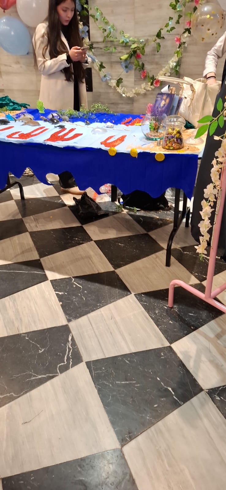
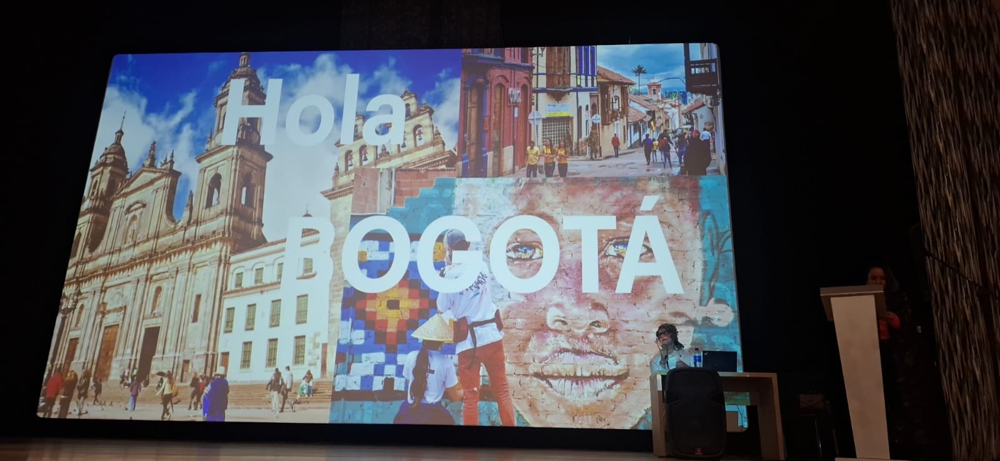
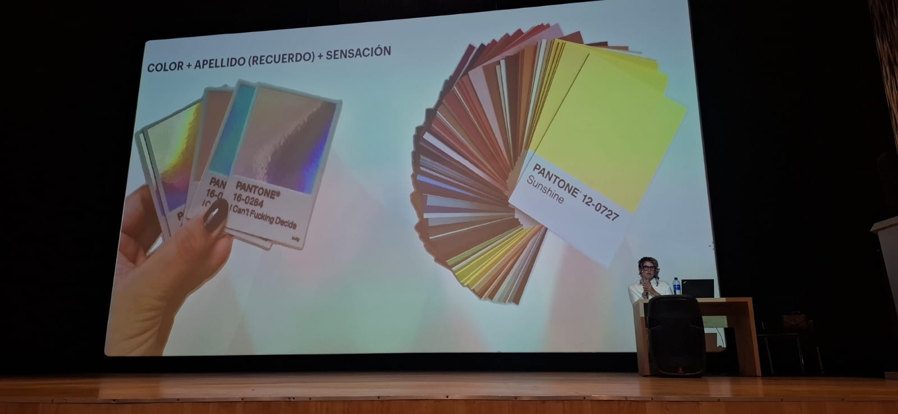
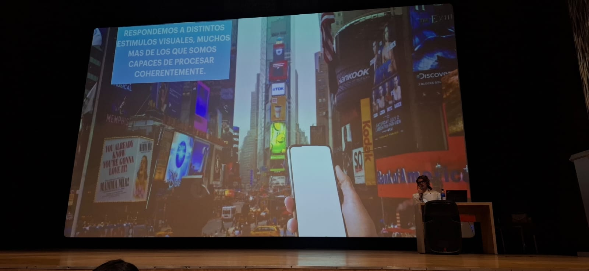
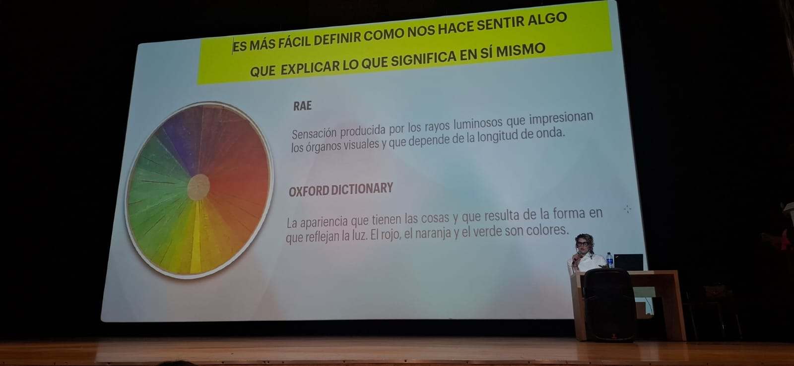
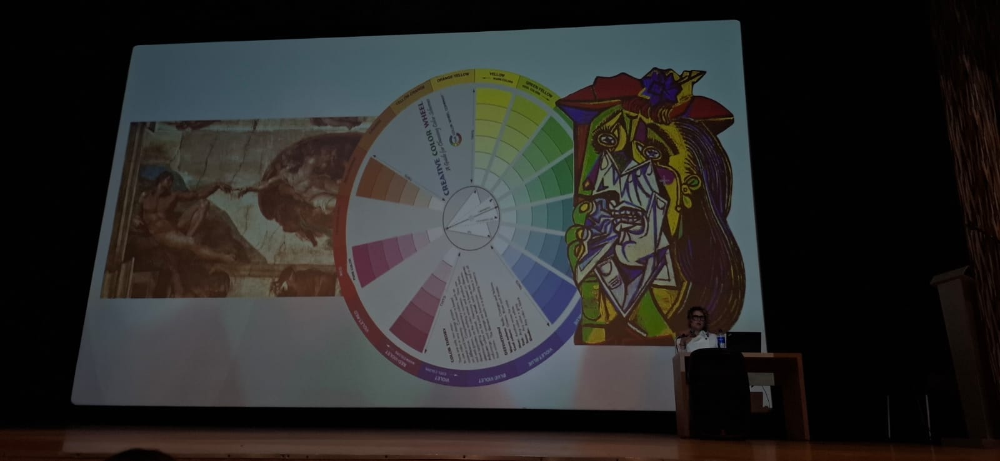
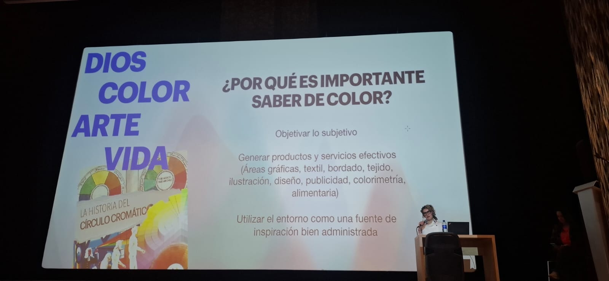
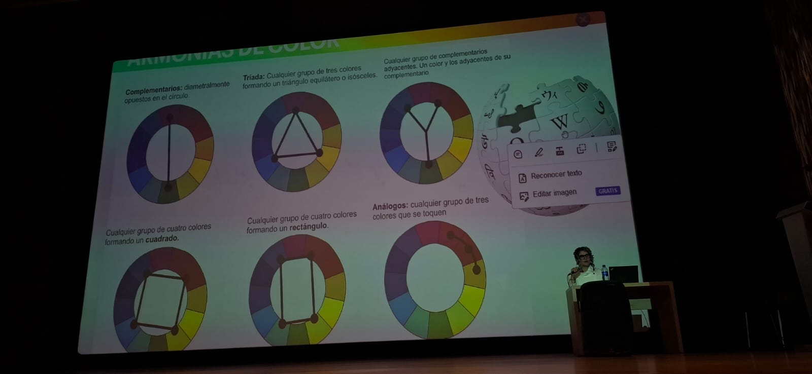
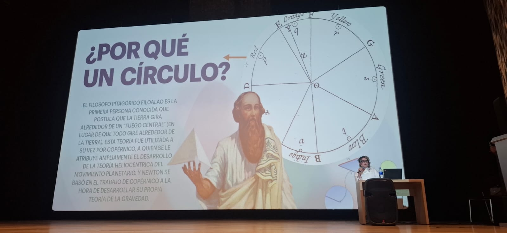
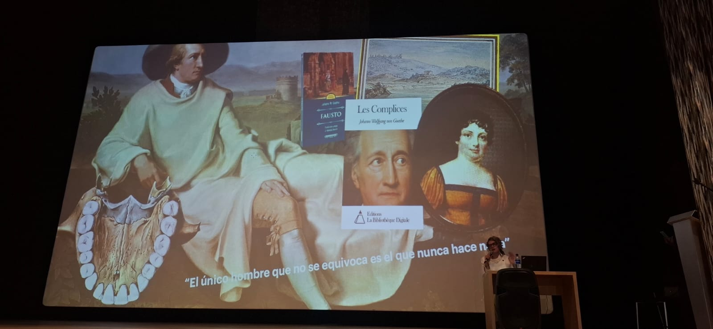
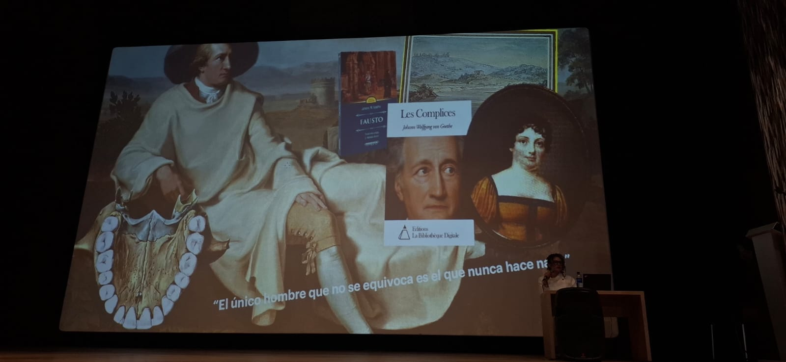
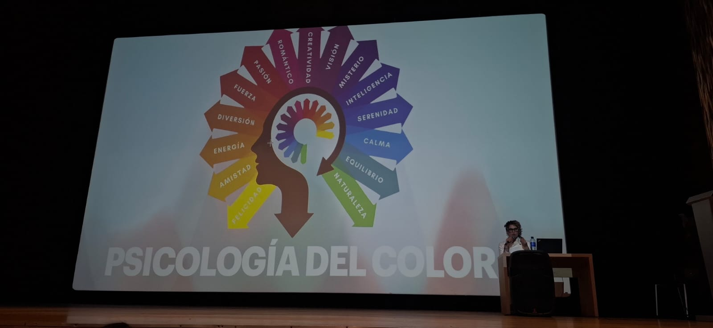
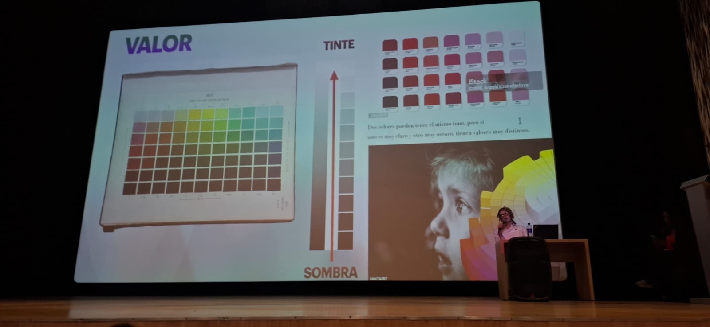
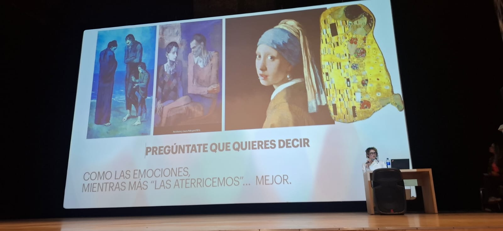
La industria de la moda es una de las más contaminantes del mundo. Sin embargo, eventos como Moda ECCI demuestran que la creatividad y la tecnología pueden ser herramientas poderosas para revertir este impacto. Como desarrolladores de software, tenemos un rol activo en la construcción de un futuro más sostenible.
El software que construimos puede impulsar plataformas de economía circular: sistemas de intercambio de ropa, aplicaciones para medir la huella de carbono de prendas, herramientas de trazabilidad en cadenas de suministro textil, o interfaces que eduquen al consumidor sobre producción sostenible.
Optimizar procesos digitales para minimizar el desperdicio en producción.
Sistemas digitales que faciliten el intercambio y reuso de materiales.
Software eficiente que reduzca el consumo energético de servidores.
Tecnología alineada con los Objetivos de Desarrollo Sostenible (ODS).
Usar el color de forma intencional en el diseño de software reduce la fricción del usuario y mejora la experiencia, lo que a su vez reduce el rebote y el abandono de aplicaciones — menos energía desperdiciada en interacciones fallidas.
El código eficiente consume menos recursos del servidor. La optimización de renders, el lazy loading y la reducción de peticiones HTTP son prácticas de desarrollo que también son prácticas sostenibles.
Construir plataformas que promuevan la economía circular en la industria textil —intercambio, reparación, upcycling— es una manera concreta en que ADSO puede contribuir a un mundo más sostenible.